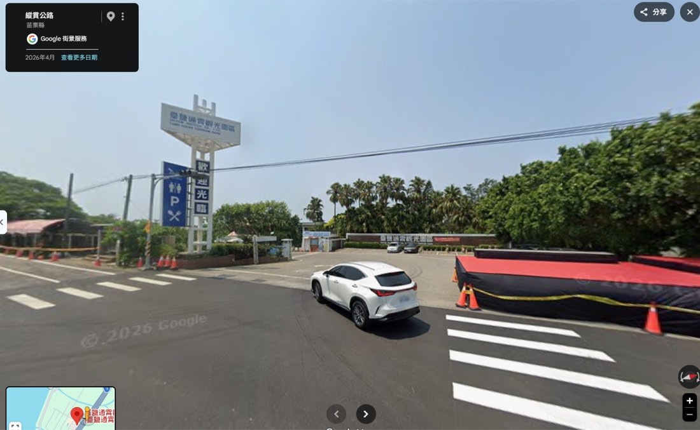
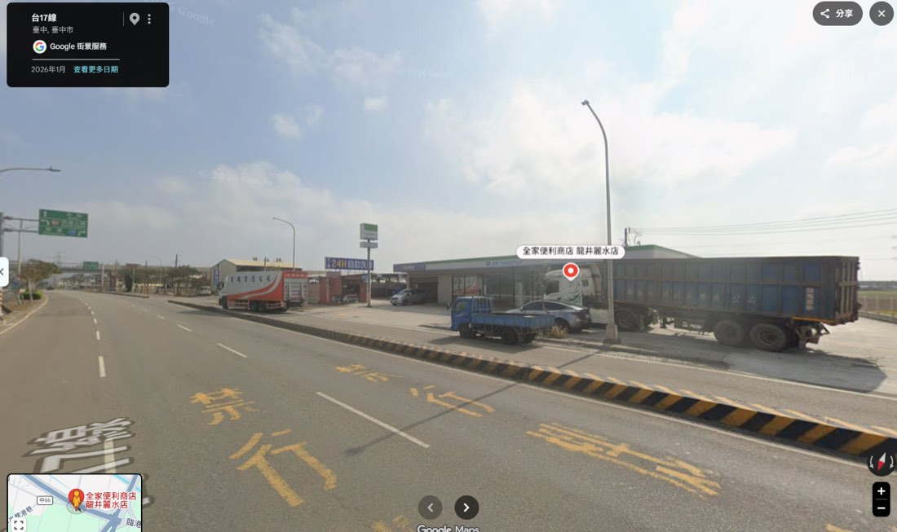
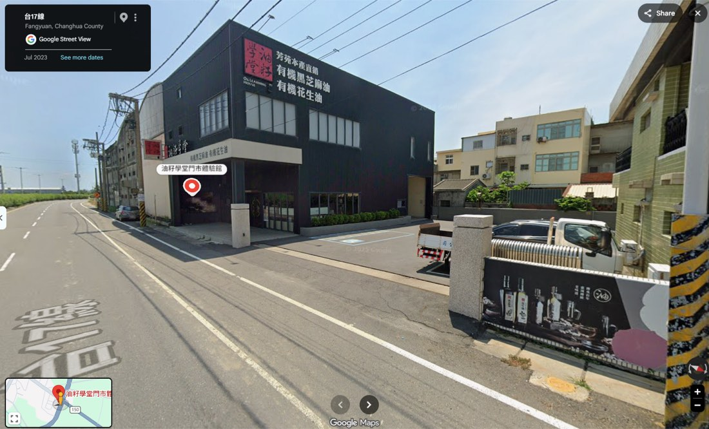
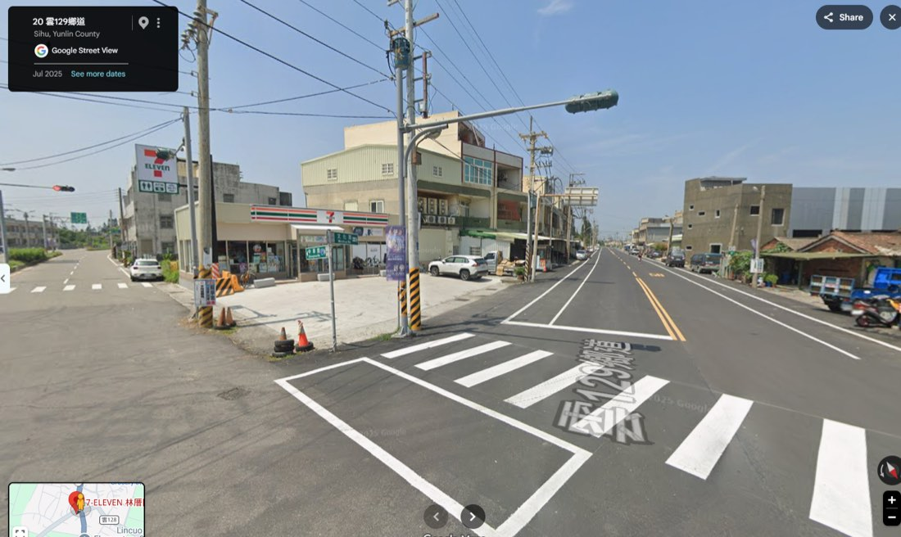
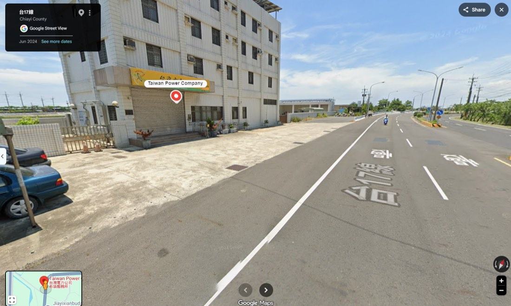
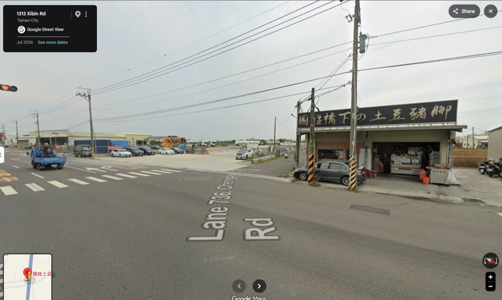
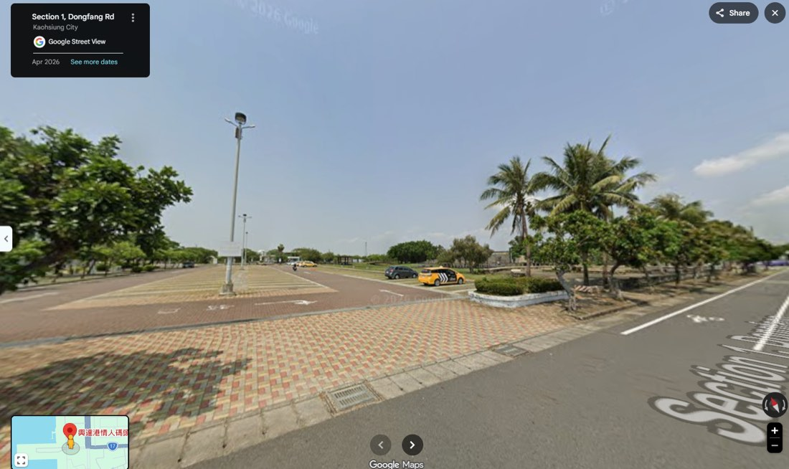
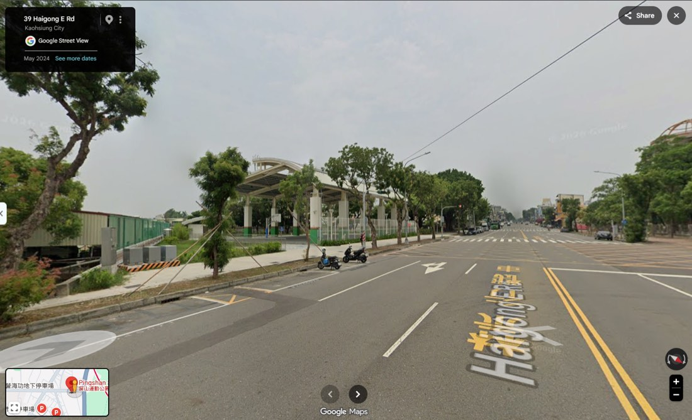

北高360.gpx 是第三方 ensage 匯出檔，與官方路線有 31 km 不同。全長 354.2 km、↑274 ↓242 m、完賽 15:25。車錶請重新匯入下面的檔案。
TCX 內含 12 個 CoursePoint（補給點會在車錶上跳提示），匯入位置是 Garmin Connect 的 Courses（課程） → connect.garmin.com/modern/courses → Import。不是 Import Data 那頁，那頁只收活動檔。Wahoo／Bryton 兩種格式都能吃，GPX 較通用。

S1
S2
S3
S4
S5
餐
S6
終御飯糰（原味鹽、鮪魚、梅子）· 香蕉 · 烤地瓜（去皮、適量）· 原味麵包 · 運動飲料
茶葉蛋 · 洋芋片、餅乾 · 泡麵 · 炸雞等油炸物 · 奶油麵包、甜點 · 香腸、肉包 · 珍奶